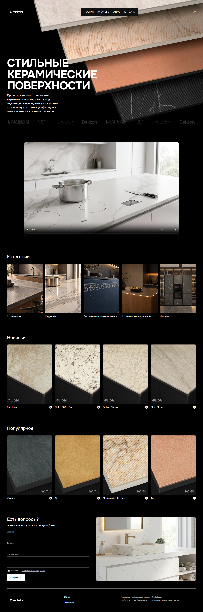
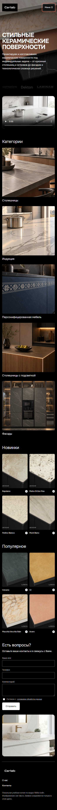
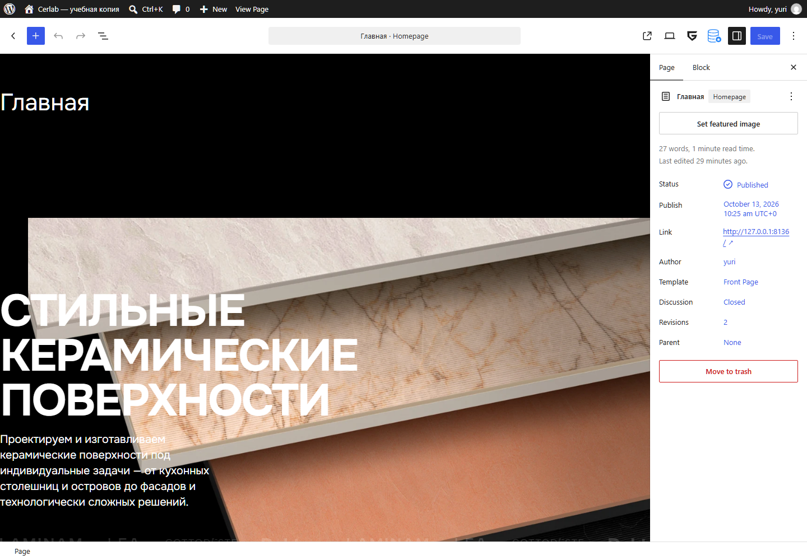
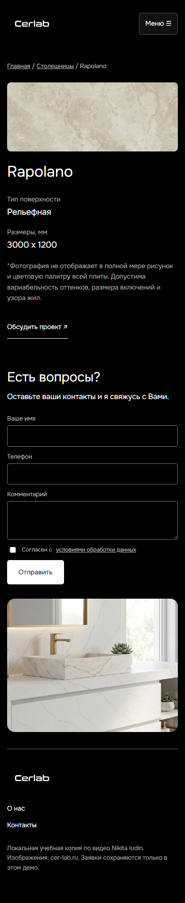

Как сделать сайт-каталог
на WordPress
От изучения референса до товаров, галереи и заявок. Вы разберётесь, как собрать такой сайт руками, и увидите, какую работу уже выполнил AI-агент.
Начать изучение →Основа — локальный прототип Cerlab, созданный по разбору видео Nikita Iudin. Это самостоятельная реализация показанной технологии. Автор видео не публиковал исходный код, а оригинальный макет Figma не был получен. Дальше отдельно обозначено, что показал автор и что спроектировал агент.
Что Вы собираете и как учиться
Результат этапа: Вы понимаете назначение сайта и порядок работы.
Представьте компанию, которая изготавливает керамические столешницы и фасады. Ей нужен сайт: показать направления работы, образцы материалов и получить заявку. Посетитель выбирает категорию, открывает товар, смотрит фотографии и характеристики, затем оставляет контакты. Менеджер добавляет новые товары через админку.
В нашем проекте именно такой каталог: пять категорий, восемь образцов, главная, карточки, информационные страницы и форма. Корзины, оплаты и складского учёта нет. Если они появятся в задаче, потребуется отдельное решение — например, WooCommerce.
Учитесь на маленьком результате
- Сначала прочитайте главы об устройстве сайта. Не пытайтесь сразу запомнить PHP.
- Создайте тестовый WordPress и один товар.
- Соберите его карточку. Только после этого переносите остальные образцы и дизайн.
- Измените товар через админку и проверьте, что сайт обновился.
Прошёл весь путь в проекте
Агент изучил видео и публичный сайт, выбрал архитектуру, написал тему и плагин, подготовил локальную базу, создал страницы и товары, затем проверил формы, редактор и адаптивность. Вы изучаете уже работающий пример и можете сопоставить объяснение с исходниками.


Скачать авторские исходники темы, плагина и скриптов. В архиве нет паролей, базы, установленных сторонних плагинов и оригинальных фотографий. Это материал для изучения кода; для запуска понадобятся WordPress, медиа и подготовка окружения.
Как WordPress превращается в сайт
Результат этапа: Вы различаете движок, тему, плагин и базу данных.
WordPress — программа на сервере. Когда посетитель открывает адрес, сервер запускает PHP-код. WordPress определяет нужную страницу, получает записи из базы, выбирает шаблон и возвращает браузеру HTML. Браузер загружает CSS, JavaScript и изображения, затем рисует страницу.
| Часть | За что отвечает | В нашем проекте |
|---|---|---|
| Движок | Вход в админку, страницы, редактор, медиа, работа с базой | WordPress |
| Тема | Внешний вид и шаблоны страниц | Дочерняя cerlab-child |
| Плагин | Дополнительные функции и сущности | cerlab-catalog: товары и заявки |
| Редактор | Сборка содержимого из блоков | Gutenberg + GreenShift |
| База | Хранит записи, поля, настройки и пользователей | SQLite локально |
Запомните два независимых действия: установка темы меняет оформление, установка плагина добавляет возможности. Страница «Главная» находится в базе; файл front-page.html задаёт её оболочку. Картинка хранится файлом, а её описание и принадлежность товару — в базе.
Разделил внешний вид и данные. Тема содержит шаблоны, стили и меню. Плагин регистрирует товары, категории, метаполя, блоки и обработчик заявки. Поэтому смена темы не требует заново придумывать модель товаров.
Изучение видео и сайта-референса
Результат этапа: у Вас есть список подтверждённых решений, а не догадки.
Референс — пример, по которому Вы изучаете дизайн и поведение. В задаче им было видео Nikita Iudin и показанный сайт cer-lab.ru. Ролик длится 4:36 и представляет готовый проект, а не полный урок с кодом.
- Посмотрите видео целиком и выпишите названия инструментов.
- Зафиксируйте главную, категорию, товар и админку на снимках.
- Откройте сайт, нажмите меню и товар, прокрутите карточку.
- Запишите, что можно редактировать: заголовок, фото, артикул, размер, категория.
- Отдельно пометьте всё, чего автор не показал: промпты, исходники, настройки хостинга.
Сначала прочитал IDEA.md. Получение ролика столкнулось с проверкой входа, ошибками сети и выдачи токенов. Агент использовал yt-dlp, живую браузерную сессию через Browser Bridge и резервный канал Sirius. Видео скачалось, но субтитры не пришли. Русскую речь распознал локальный GigaAM; ffmpeg извлёк кадры. По кадрам найден точный домен с дефисом.
| Момент ролика | Подтверждённый подход |
|---|---|
| 00:30–01:23 | Figma, Auto Layout и варианты для разных экранов |
| 01:03–01:34 | Общий каталог с фильтрацией отложен; категории имеют свою композицию |
| 01:57–02:28 | Прелоадер, 3D-изображение, видео и микроанимации |
| 02:50–03:54 | Отдельный плагин товаров, GreenShift, галерея и характеристики |
| 03:54 | Дочерняя Twenty Twenty-Five |
cerlab-core. Наш cerlab-catalog написал агент. Разбор подтверждает идею архитектуры, но не доказывает совпадение её внутренней реализации с оригиналом.Дизайн до написания кода
Результат этапа: описаны страницы, размеры и повторяющиеся компоненты.
Дизайн — это не только цвет кнопки. Нужно решить, что посетитель увидит первым, как перейдёт к материалу и где оставит заявку. На главной Cerlab идут крупный баннер, логотипы производителей, видео, категории, новинки, популярные товары, форма и подвал.
- В Figma создайте отдельные фреймы для компьютера, планшета и телефона.
- Соберите повторяемые элементы: меню, карточку категории, карточку товара и поля формы.
- Используйте Auto Layout: он связывает размеры блока с его содержимым и отступами.
- Проверьте длинное название, две строки текста и маленький экран.
- Передайте в код конкретные размеры, шрифты и правила перестроения.
Редактируемого Figma-файла не было. Агент изучил его показ на видео и публичный сайт: порядок секций, шрифты, изображения и размеры. Основные правила занёс в CSS. Он не создавал исходный Figma, не восстановил все уникальные композиции категорий и не выдавал MVP за точную полную копию.
Для прототипа выбраны чёрный фон, белый текст, шрифт Onest, крупный заголовок и спокойные фотографии поверхностей. В исходнике также обнаружен Inter; наш прототип использует Onest. Цветовое решение связано с конкретным премиальным каталогом: для другой компании стиль может быть иным.
| Элемент | Пример правила в прототипе |
|---|---|
| Заголовок главной | 80 пикселей на широком экране, 60 на планшете, 40 на телефоне |
| Категории | Пять колонок → две колонки → одна колонка |
| Товары | Четыре колонки → две колонки |
| Карточка товара | Галерея и сведения рядом → друг под другом |
Подготовка рабочего WordPress
Результат этапа: WordPress открывается локально и доступна его админка.
Для WordPress нужны PHP, база и сервер, который обрабатывает запросы. Локальный стенд работает на Вашем компьютере и подходит для обучения. Хостинг делает сайт доступным посетителям в интернете.
- Подготовьте локальную PHP-среду с базой или отдельный тестовый сайт на хостинге.
- Скачайте WordPress с официального сайта и разместите его файлы в папке сайта.
- Создайте базу, укажите подключение и пройдите установку: название, логин, пароль.
- Войдите в
/wp-admin/и создайте пробную страницу. - Настройте постоянные ссылки, чтобы адреса страниц были понятными.
Обычный ручной путь с MySQL/MariaDB не требует SQLite-плагина.
На компьютере уже был PHP 8.3.30 с pdo_sqlite; Docker не работал. Агент выбрал SQLite и официальный SQLite Database Integration 3.1.0, скачал WordPress 7.1.3, Twenty Twenty-Five 1.5 и GreenShift 13.2.1. База находится вне папки, которую раздаёт веб-сервер. Пароль администратора сгенерирован случайно.
SQLite — база в одном файле. Здесь она позволила обойтись без отдельного сервера MySQL. Плагин подменяет слой доступа к базе, а WordPress продолжает работать через свой обычный интерфейс. Это выбор локального стенда, не обещание одинаковой совместимости любого набора плагинов.
127.0.0.1 — Ваш собственный компьютер. 8136 — порт конкретного сервера. У другого человека этот адрес не откроет Ваш стенд. В прототипе сайт доступен на http://127.0.0.1:8136/, а админка — на /wp-admin/.Агент копировал SQLite drop-in в wp-content/db.php, создавал конфигурацию и запускал установку программно. Новичку не нужно повторять эти действия на рабочем сайте: установка такого драйвера выбирает отдельную базу. Подробности — в официальной странице SQLite Integration.
Создание дочерней темы
Результат этапа: собственные изменения отделены от родительской темы.
Twenty Twenty-Five даёт основу блочной темы. Дочерняя тема дополняет её своими файлами. Для нашего случая это удобно: обновления родителя не должны заменять написанный агентом дизайн. Но дочерняя тема не защищает от любых конфликтов обновлений — совместимость всё равно проверяют.
- Установите Twenty Twenty-Five через «Внешний вид → Темы».
- Создайте в
wp-content/themes/папкуcerlab-child. - Добавьте
style.cssс заголовком ниже. - Добавьте шаблоны и
functions.phpдля своих стилей и скриптов. - Активируйте дочернюю тему в админке.
Создал папку темы, описал её родителя, подключил собственные assets/site.css и assets/site.js, добавил theme.json, шаблоны страниц и части шапки/подвала. Файлы родительской темы не редактировал.
/* Файл: wp-content/themes/cerlab-child/style.css */
/*
Theme Name: Cerlab Prototype
Template: twentytwentyfive
Version: 0.1.0
*/Theme Name — имя, которое видно в админке. Template — точное имя папки родительской темы. Здесь важны написание и отсутствие лишних пробелов в значении. Сам заголовок CSS не создаёт дизайн: оформление находится в подключённом файле стилей.
cerlab-child/
├─ style.css
├─ functions.php
├─ theme.json
├─ templates/
│ ├─ front-page.html
│ ├─ page.html
│ ├─ single-cerlab_product.html
│ ├─ index.html
│ └─ 404.html
├─ parts/
│ ├─ header.html
│ └─ footer.html
└─ assets/
├─ site.css
├─ site.js
└─ media/front-page.html, обычная страница — page.html, товар нашего типа — single-cerlab_product.html. Один index.html не гарантирует, что все страницы примут нужный вид: более конкретный шаблон родителя может перехватить вывод.Функции дочерней и родительской тем загружаются обе; не нужно копировать родительский functions.php целиком. Достаточно своих добавлений. Справочник дочерних тем WordPress.
theme.json, CSS и шаблоны
Результат этапа: Вы понимаете, где меняются цвета, отступы и общий каркас.
theme.json задаёт общие настройки темы: палитру, шрифты и ширины. CSS управляет конкретными элементами: размером заголовка, сетками, липкой колонкой и состояниями кнопок. HTML-шаблон определяет, какие блоки входят в оболочку страницы.
Сначала задайте общие цвета и шрифт в теме. Затем оформляйте компоненты через CSS-классы. Если все карточки используют .product-card, одной правкой можно изменить их отступы. В редакторе сайта проверьте, как выглядит глобальная палитра.
Описал чёрный, белый и терракотовый цвета, Onest и общую ширину. Отдельно написал CSS для главной, категорий, товара, формы и мобильных экранов. Шрифты сохранил локально: для их отображения прототип не обращается к Google при каждом посещении.
{
"version": 3,
"settings": {
"layout": {"contentSize": "1820px"},
"color": {
"palette": [
{"slug": "base", "color": "#000000", "name": "Чёрный"},
{"slug": "contrast", "color": "#ffffff", "name": "Белый"}
]
}
}
}Это сокращённый пример theme.json. JSON требует двойных кавычек и не допускает запятую после последнего элемента. Для полного файла смотрите исходник темы.
<!-- wp:template-part {"slug":"header","tagName":"div"} /-->
<!-- wp:group {"tagName":"main","className":"page-content"} -->
<main class="wp-block-group page-content">
<!-- wp:post-content /-->
</main>
<!-- /wp:group -->
<!-- wp:cerlab/enquiry /-->
<!-- wp:template-part {"slug":"footer","tagName":"div"} /-->Комментарии wp:... — разметка блоков WordPress. post-content означает: «вставить содержимое текущей записи». Поэтому одна оболочка подходит нескольким страницам. cerlab/enquiry — динамический блок формы, который зарегистрирован нашим плагином.
Gutenberg и GreenShift: сборка блоками
Результат этапа: страница редактируется через админку, а не только через код.
Gutenberg — блочный редактор WordPress. Заголовок, абзац, изображение и группа — отдельные блоки. GreenShift добавляет расширенные блоки для композиции, оформления и анимаций. Заказчик сможет менять содержимое визуально, если разработчик действительно собрал его из редактируемых элементов.
- Установите GreenShift через «Плагины → Добавить» и активируйте его.
- Откройте страницу и добавьте контейнер или Advanced HTML Element.
- Поместите внутрь заголовок, абзац и изображение.
- Задайте размеры и отступы для разных экранов.
- Сохраните страницу, затем проверьте обычный сайт отдельно от редактора.
Написал сохранённую блочную разметку программно. Использовал Element-контейнер для первого экрана, отдельные GreenShift-заголовок и абзац, а также заголовки категорий. Синтаксис сверил с инструкциями установленного GreenShift. Картинки баннера, видео и часть остальных элементов в MVP оставил HTML-блоками.
<!-- wp:greenshift-blocks/element {
"id":"gsbp-a12b345",
"localId":"gsbp-a12b345",
"tag":"h2",
"type":"text",
"textContent":"Наша коллекция",
"className":"collection-title"
} -->
<h2 class="collection-title gsbp-a12b345">Наша коллекция</h2>
<!-- /wp:greenshift-blocks/element -->Это учебный пример структуры. id и localId совпадают; текст присутствует и в параметре, и в HTML. Если сохранённая разметка не соответствует тому, что ожидает блок, редактор сообщает об ошибке. Синтаксис конкретной версии нужно проверять, а не угадывать.

Свой плагин: товары и категории
Результат этапа: в админке появляется отдельный раздел товаров.
В WordPress уже есть записи и страницы. Для каталога удобнее завести отдельный тип записи — Custom Post Type, CPT. Тогда товар не смешивается с новостями. Категории товаров описываются таксономией: это система группировки записей.
- Создайте
wp-content/plugins/cerlab-catalog/. - Внутри создайте PHP-файл с заголовком «Plugin Name».
- На событии
initзарегистрируйте тип товара и таксономию. - Активируйте плагин через админку.
- Создайте товар и сохраните постоянные ссылки, если новый адрес ещё не открывается.
Создал самостоятельный плагин. Тип cerlab_product хранит товары, cerlab_category группирует их. Плагин также отвечает за динамические блоки, метаполя и локальные заявки. Это новый авторский код, а не скачанный закрытый плагин референса.
<?php
/** Plugin Name: Учебный каталог */
defined('ABSPATH') || exit;
add_action('init', function () {
register_post_type('cerlab_product', [
'label' => 'Товары',
'public' => true,
'show_in_rest' => true,
'supports' => ['title', 'editor', 'thumbnail', 'custom-fields'],
'rewrite' => ['slug' => 'product'],
]);
register_taxonomy('cerlab_category', 'cerlab_product', [
'label' => 'Категории товаров',
'public' => true,
'hierarchical' => true,
'show_in_rest' => true,
]);
});Этот минимальный пример создаёт сущности, но ещё не содержит полей, формы и готового дизайна. add_action подключает функцию к событию WordPress. init — момент инициализации. show_in_rest открывает тип для REST-интерфейса и блочного редактора. supports перечисляет стандартные возможности записи.
Регистрировать CPT рекомендуется в плагине, чтобы его доступность не зависела от темы. Официальный справочник CPT. Полная реализация: cerlab-catalog.php.
Характеристики и удобная админка
Результат этапа: менеджер меняет размеры, поверхность и фото товара без изменения PHP.
Название товара хранится в заголовке записи. Артикул, тип поверхности и размеры — дополнительные поля, или метаданные. Например, у Rapolano размер 3000 x 1200, а тип поверхности — «Рельефная». Это отдельные значения, которые карточка выводит в заранее определённых местах.
Откройте товар и заполните название. Выберите категорию, миниатюру и фотографии. В панели «Характеристики и галерея» введите размер и поверхность. Укажите, должен ли товар попадать в новинки или популярное. Сохраните и откройте карточку как посетитель.
Создал метаполя и панель редактирования. Добавил WordPress Media для выбора нескольких фотографий, очистку выбора и превью. Реализовал обработчик save_post_cerlab_product. Для строковых полей, доступных через REST, проверяет право редактировать конкретную запись.
| Значение | Где находится | Как используется |
|---|---|---|
| Название | Заголовок записи | В карточке и сетке |
| Миниатюра | Изображение записи | Обложка в сетке |
| Размер | _cerlab_size | Характеристики |
| Поверхность | _cerlab_surface | Характеристики |
| Галерея | Список ID вложений | Фото на странице товара |
| Группа | _cerlab_group | Новинки или популярное |
ID — числовой идентификатор записи или изображения в WordPress. Пользователь выбирает фотографии мышью; плагин сохраняет их ID и затем получает нужные изображения из медиатеки.
Практический результат проверки: агент поменял _cerlab_size через авторизованный WordPress API, увидел новый размер в карточке и восстановил прежний. Интерфейс галереи реализован, но отдельный автоматический сценарий выбора нескольких фото в модальном окне не выполнялся.
Категория как отдельная страница
Результат этапа: у каждой категории есть свой адрес и редактируемая композиция.
Термин таксономии и страница — разные сущности. Термин говорит «этот товар относится к столешницам». Страница позволяет оформить столешницы: поставить баннер, описание, видео и нужный порядок блоков. В рассматриваемой технологии их связывают.
- Создайте термин «Столешницы» в категориях товаров.
- Создайте страницу «Столешницы», добавьте заголовок и изображение через редактор.
- Добавьте блок/шорткод для связанных товаров.
- Свяжите страницу с термином. В нашем MVP это делает установочный PHP-скрипт, отдельной кнопки связывания в админке нет.
- Проверьте адрес и назначьте товар этой категории.
Создал родительскую страницу категорий и пять дочерних. Сохранил ID страницы в метаданных термина _cerlab_page, а slug категории — в поле страницы _cerlab_category_slug. Карточки меню берут адрес связанной страницы. Для пути /category/... добавил явное правило маршрутизации.
// Внутри установки, когда оба ID уже получены:
update_term_meta($term_id, '_cerlab_page', $page_id);
update_post_meta($page_id, '_cerlab_category_slug', 'stoleshnitsy');Эти строки запускаются в загруженном окружении WordPress и требуют настоящих ID. Они не являются текстом для вставки в визуальный редактор. Для новых категорий новичку проще сначала использовать уже готовую связку; для полноценного клиентского решения разработчик должен добавить понятный интерфейс настройки связи.
В видео автор отложил общий фильтруемый каталог. Агент сохранил это решение: категории доступны из меню и карточек, а общей системы фильтров нет. Три направления без товаров в нашем образце показывают обложку, короткое сообщение и форму.
Материалы: товары, фотографии и видео
Результат этапа: данные подготовлены и связаны с настоящими записями.
Даже хороший шаблон выглядит пустым без содержимого. Для каждой записи нужны название, категория, фото и доступные характеристики. Неизвестную цену или артикул нельзя придумывать только ради заполнения карточки.
- Соберите таблицу товара: название, категория, размер, поверхность, фото.
- Загрузите изображения в «Медиафайлы» и задайте понятные подписи.
- Создайте товар и выберите его миниатюру и галерею.
- Проверьте, что маленькая картинка используется в сетке, а достаточная по качеству — в карточке.
- Повторите для остальных товаров, сохраняя порядок и единицы измерения.
Прочитал публичные страницы референса с помощью Python requests и BeautifulSoup. Сохранил кэш HTML, собрал восемь товаров с главной и пять категорий, скачал изображения и записал происхождение файлов. Сведения сохранил в JSON. Затем создал записи через функции WordPress и импортировал изображения в медиатеку.
Новинки: Rapolano, Pietra Di Gre Fine, Perlino Bianco, Mont Blanc. Популярные: Vulcano, Or, Macchia Vecchia Rain, Acero. На референсе четыре новинки относятся к столешницам, четыре популярных образца — к фасадам. Агент не распределял их по другим категориям произвольно.
Видео индукционной столешницы сохранено локально, ffmpeg сделал для него изображение-постер. Постер виден до запуска ролика. Шрифт Onest загружен отдельными файлами обычного и жирного начертания.
collect_reference.py обходит ограниченный набор публичных страниц. reference_client.py проверяет домен, ставит таймаут, ограничивает размер файла и повторяет запрос при сетевой ошибке. Это не копирование серверного PHP и не получение доступа к чужой админке.Для нового клиентского проекта используются его материалы или изображения с подходящими правами. Локальные фотографии Cerlab были нужны для учебной проверки сходства. В публичный архив исходников они не включены; здесь опубликованы снимки результата с указанием референса.
Главная: соединяем блоки и данные
Результат этапа: главная показывает каталог и обновляется вслед за товарами.
На главной есть два вида содержимого. Баннер, заголовок и описание меняются редактором страницы. Сетки новинок и популярного получают записи из базы. Менеджер не должен вручную рисовать новую карточку всякий раз, когда добавляет товар.
- Создайте страницу «Главная» и выберите её стартовой в «Настройки → Чтение».
- Добавьте первый экран: фон/изображение, заголовок и описание.
- Ниже разместите логотипы, видео и категории.
- Добавьте вывод новинок и популярных записей из плагина.
- В шаблон включите форму и подвал, чтобы они были едиными.
Создал страницу программно, записал в неё блочную разметку и выбрал её главной. Первый экран — контейнер GreenShift с текстом и HTML-изображением. Для категорий и товарных сеток использовал шорткоды плагина; сложные части шаблона позднее вынес в динамические блоки.
[cerlab_categories]
[cerlab_products group="new"]
[cerlab_products group="popular"]Шорткод — короткая команда, которую плагин заменяет HTML. Первый строит пять карточек категорий. Второй и третий выбирают по четыре товара с соответствующим значением _cerlab_group. Если товару поменять группу, он сможет появиться в другой подборке без изменения дизайна страницы.
Статические и динамические блоки
У статического блока HTML сохраняется в записи. У динамического окончательный HTML создаёт PHP-функция при запросе. В нашем плагине динамические шапка, форма и карточка товара зарегистрированы как cerlab/header, cerlab/enquiry и cerlab/product. В редакторе их показывает ServerSideRender, а save: () => null оставляет вывод серверу.
core/shortcode получил дополнительные <p> и <br> от wpautop. Пункты меню слипались или уходили на вторую строку. Агент заменил вывод сложных частей динамическими блоками. Править только CSS в таком случае было бы недостаточно.Карточка товара: галерея и липкая колонка
Результат этапа: один шаблон выводит разные товары с их данными.
Не нужно создавать отдельный HTML-файл для каждого материала. Шаблон товара одинаковый, а WordPress подставляет текущую запись: название, фотографии, размер и поверхность.
- Создайте
single-cerlab_product.htmlв дочерней теме. - Вставьте блок, который выводит текущий товар.
- Слева расположите галерею, справа — название и характеристики.
- Добавьте хлебные крошки и ссылку к форме заявки.
- На широком экране закрепите правую колонку при прокрутке; на телефоне отключите закрепление.
Написал PHP-вывод карточки. Он читает ID текущего товара, галерею и метаполя, получает связанную категорию и строит хлебные крошки. Если загруженной галереи нет, используется фотография образца или миниатюра. Текст и адреса проходят соответствующее экранирование.
.product-detail {
display: grid;
grid-template-columns: 1.4fr 1fr;
gap: 40px;
align-items: start;
}
.product-info {
position: sticky;
top: 35px;
}
@media (max-width: 640px) {
.product-detail { grid-template-columns: 1fr; }
.product-info { position: static; }
}fr — доля свободного места в сетке. sticky удерживает колонку около верхнего края в пределах её контейнера. Эффект заметнее, когда слева несколько фотографий и галерея достаточно длинная. Доступная ширина и свойства родительских контейнеров тоже влияют на работу sticky.

Форма заявки: что происходит после кнопки
Результат этапа: заявка действительно записывается, а не только показывает сообщение.
Форма — это два элемента: видимые поля в браузере и обработчик на сервере. HTML собирает имя, телефон, комментарий и согласие. PHP проверяет запрос и сохраняет заявку. В данном прототипе заявку видит локальный администратор; почтовые и Telegram-уведомления не подключены.
- Соберите форму с понятными подписями, обязательными именем и телефоном.
- Задайте
method="post", адрес обработчика и скрытое имя действия. - Добавьте nonce и серверную проверку полей.
- Сохраните заявку в базу либо подключите выбранный способ уведомления.
- Отправьте тест и найдите результат в админке.
Создал закрытый тип cerlab_lead. Подключил обработчики для посетителей с входом и без входа. Проверяет nonce, телефон, согласие и скрытое поле-ловушку. После успешной записи перенаправляет к форме со статусом. Личные контакты владельцев референса в отправке не используются.
add_action('admin_post_cerlab_enquiry', 'cerlab_save_enquiry');
add_action('admin_post_nopriv_cerlab_enquiry', 'cerlab_save_enquiry');Первая строка обслуживает авторизованного пользователя, вторая — обычного посетителя. Имя действия совпадает с полем action в HTML. Функция cerlab_save_enquiry находится в плагине и содержит реальную логику проверки и записи.
required помогает человеку заполнить форму, но запрос можно отправить без браузера. Поэтому сервер снова проверяет обязательные поля. Очистка текста нужна перед хранением, экранирование — перед выводом в HTML.Для рабочего клиентского сайта отдельно нужны способ уведомлений, политика хранения данных и защита от массового спама. Текущий honeypot не является универсальным антиспамом.
Адаптивность, меню и анимации
Результат этапа: сайт удобен на телефоне, планшете и компьютере.
Адаптивность означает изменение композиции под ширину экрана. Просто уменьшить весь сайт недостаточно: пять узких категорий на телефоне становятся нечитаемыми. Поэтому сетки перестраиваются, меню превращается в кнопку, а две колонки карточки становятся одной.
- Откройте сайт и меняйте ширину окна.
- Проверьте каждую сетку, длинный текст и размер элементов управления.
- Добавьте CSS-правила для точек перестроения — breakpoints.
- Проверьте меню мышью, касанием и клавиатурой.
- Убедитесь, что анимация не мешает читать и не блокирует страницу.
Написал правила для 990 и 640 пикселей, а проверял 1440, 990, 768 и 390. Добавил переключатель меню с aria-expanded, закрытие через Escape и видимые рамки фокуса. Короткий прелоадер удаляется автоматически. Для reduced motion анимация и плавная прокрутка отключаются.
.category-grid { display: grid; grid-template-columns: repeat(5, 1fr); }
@media (max-width: 990px) {
.category-grid { grid-template-columns: repeat(2, 1fr); }
}
@media (max-width: 640px) {
.category-grid { grid-template-columns: 1fr; }
}@media применяет правила при указанном условии. aria-expanded сообщает вспомогательным технологиям, раскрыто ли меню. JavaScript меняет это значение вместе с классом, который показывает навигацию.
overflow-x:hidden может лишь обрезать важное содержимое. В проверенном прототипе на четырёх ширинах переполнение не обнаружено.Для прелоадера не нужна имитация долгой загрузки. Наш эффект короткий, не перехватывает клики и не обязан ждать успешной загрузки всех внешних файлов, чтобы показать сайт.
Проверка результата и исправление ошибок
Результат этапа: Вы проверили поведение, данные и редактируемость.
Проверка отвечает на вопрос «что работает в действительности?». Красивый снимок не показывает, сохраняет ли форма заявки, работают ли ссылки и способен ли заказчик изменить текст.
- Пройдите с главной во все категории и товары.
- Попробуйте несуществующий адрес: должна быть понятная 404.
- Откройте страницу в редакторе: нет ли сообщения о повреждённых блоках?
- Измените текст и размер товара, сохраните, проверьте обычную страницу.
- Отправьте заявку и найдите её в админке.
- Проверьте телефонную и широкую версии, изображения, меню и ошибки консоли.
Использовал PHP-проверку состояния WordPress, Python requests для HTTP и Playwright для браузера. Проверял настоящую базу, DOM и редактор. Тестовые заявки удалял, временные изменения текста и размера возвращал к исходным значениям.
| Проверка нашего стенда | Результат |
|---|---|
| Главная, пять категорий, восемь товаров и три информационные страницы | 17 маршрутов вернули 200 |
| Несуществующая страница | 404 |
| Конфигурация, журнал и SQLite по HTTP | Доступ закрыт |
| 1440 / 990 / 768 / 390 пикселей | Нет горизонтального скролла, фото загружены |
| Меню на телефоне | Открывается, закрывается через Escape |
| GreenShift | Блоки валидны, изменение сохранено и показано |
| Поле размера | Изменение через API сохранилось и отобразилось |
| Форма | Запись в базе подтверждена |
| Ошибки JavaScript | Не обнаружены в выполненном сценарии |
Три ошибки, которые возникли в процессе
- Лишние абзацы в меню. HTML через shortcode обрабатывался форматированием WordPress. Решение: динамические блоки для сложных частей.
- 404 у категорий. Путь категории конфликтовал со стандартной маршрутизацией. Решение: отдельное правило, затем обновление rewrite rules.
- Админка показывала главную. Локальный PHP-router не передавал каталоги с
index.phpвстроенному серверу. Решение: исправить обработку директорий.
Наличие успешного сценария не означает, что проверены все браузеры, устройства и сочетания плагинов. Здесь проверены конкретные версии и перечисленные действия. Открыть фактический отчёт проверки.
Все скрипты агента: что запускается и зачем
Результат этапа: Вы видите порядок автоматизации и границы каждого скрипта.
Агент не сделал WordPress «одним промптом». Он последовательно подготовил материалы, создал код, запустил установку, исправил проблемы и проверил изменения. Скрипты фиксируют повторяемую часть работы.
| Файл | Работа | Что Вы делали бы руками |
|---|---|---|
| download_runtime.py | Загружает официальные архивы движка, темы и плагинов | Скачать ZIP и распаковать в нужные папки |
| collect_reference.py | Собирает ограниченный образец страниц и фото | Заполнить таблицу и сохранить изображения |
| prepare_media.py | Готовит видео, постер и шрифты | Загрузить медиа, выбрать стоп-кадр |
| setup_local.py | Копирует собственный код, создаёт конфигурацию и пароль | Разложить файлы и заполнить конфигурацию |
| install-local.php | Ставит WordPress, активирует плагины, создаёт записи и связи | Пройти установку и заполнить админку |
| router.php + start.ps1 | Запускают локальный сервер и маршрутизацию | Настроить веб-сервер |
| check_demo.py | Проверяет сайт, форму и редактор | Пройти сценарии и сверить результаты |
| package_wordpress.py | Собирает установочные ZIP | Правильно упаковать папку темы и плагина |
Для понимания сначала пройдите действия в админке с одной страницей и одним товаром. Затем откройте соответствующий скрипт: увидите те же операции, выраженные функциями и циклами. Автоматизацию легче понять, когда известен результат каждого её шага.
Разделил внешние запросы и создание сайта, использовал кэш материалов, сохранял промежуточные файлы. Сделал повторную установку бережной к созданному контенту: при существующем стенде она обновляет собственные файлы, но не пересоздаёт страницы и пароль.
# Из папки полного локального проекта:
python scripts/download_runtime.py
python scripts/collect_reference.py
python scripts/prepare_media.py
python scripts/setup_local.py
./start.ps1
# В другом терминале, когда сервер уже работает:
python scripts/check_demo.pyЗдесь PHP пишет код сайта и работает с WordPress, Python готовит окружение и данные, JavaScript обслуживает взаимодействие в браузере. Это разные роли, а не три обязательных языка для каждой страницы.
Как публикуют WordPress и этот HTML-учебник
Результат этапа: Вы различаете перенос рабочего сайта и размещение статического пособия.
Рабочий WordPress включает PHP, базу, тему, плагины и медиа. Этот учебник — готовые HTML, CSS, JavaScript и снимки. Их можно отдавать браузеру без PHP.
- Подготовьте хостинг с PHP и подходящей базой.
- Установите WordPress и родительскую тему.
- Установите дочернюю тему, каталог и GreenShift.
- Перенесите записи, метаполя, термины, связи и медиатеку.
- Замените локальные URL, настройте постоянные ссылки, HTTPS и способ уведомлений.
- Проверьте рабочий сайт по тем же сценариям.
Агент создал отдельную папку учебника с собственными стилями, интерактивным оглавлением и уроками. В отдельный публичный GitHub-репозиторий отправляет только подготовленные учебные файлы. GitHub Pages раздаёт этот HTML-сайт. Локальная база и доступы WordPress остаются в проекте на компьютере.
| Что переносим | Где хранится |
|---|---|
| Тема и плагин | Файлы; удобно устанавливать из ZIP |
| Страницы, товары и характеристики | База данных |
| Изображения | Файлы uploads и сведения о вложениях в базе |
| Настройки и связи | База; их нужно сохранить или повторить |
| Локальные адреса | Конфигурация и часть сохранённого контента |
Два ZIP — темы и плагина — не создают готовый наполненный сайт на пустом WordPress. Экспорт записей тоже не всегда переносит все настройки и пользовательские метасвязи: результат импорта нужно проверять. Переход с SQLite на MySQL требует отдельного переноса, а не загрузки SQLite-файла в MySQL.
Локальный WordPress уже был проверен, но на внешний PHP-хостинг в этой работе не переносился. Точную копию всего референса, исходный Figma и все 74 товара агент не создавал.
Как повторять технологию с агентом
Результат этапа: Вы умеете поставить задачу и проверить работу агента.
Скилл — инструкция для AI-агента, которая помогает повторить подход. Он не является WordPress-плагином и не устанавливается в админку сайта. В нашем проекте создан и установлен wordpress-block-catalog.
- Назначение сайта и что должен сделать посетитель.
- Референс или макет, свои фотографии и описание товаров.
- Список страниц и функций: форма, фильтры, корзина — только нужное.
- Среду: локальный прототип или разрешённый тестовый хостинг.
- Понятные критерии готовности: что редактируется и что проверяется.
Изучить материалы, отделить подтверждённую технологию от предположений, создать дочернюю тему и самостоятельный каталог, наполнить образец, проверить редактор и сохранение данных. В отчёте назвать выполненные проверки и оставшиеся ограничения.
Используй $wordpress-block-catalog.
Создай локальный каталог на WordPress по этому референсу.
Нужны: главная, три категории, карточки и заявки.
Товары должны редактироваться через админку.
Используй дочернюю Twenty Twenty-Five и GreenShift.
Сначала сделай одну полностью работающую карточку.
Проверь изменение характеристики, галерею, форму
и версии 1440, 768 и 390 пикселей.
Объясни, где лежат код, данные и фотографии.Хорошая постановка фиксирует результат, а не требует «сделать красиво». Запрос на полнофункциональный магазин сразу меняет архитектуру: тогда нужно обсудить заказы, оплату и склад. Скилл помогает выбрать решение, но не отменяет проектирование.
Скилл хранится в отдельной папке с SKILL.md, справочником по видео, метаданными для интерфейса и скриптом упаковки. Он проверен валидатором. Содержание можно прочитать в публичной копии инструкции.
Практика и проверка понимания
Результат этапа: Вы связываете термины с действиями и можете повторить небольшой проект.
Пять упражнений на готовом стенде
- Измените размер. Откройте Rapolano в админке, измените значение, сохраните и проверьте карточку. Затем верните исходное.
- Создайте товар. Добавьте вымышленный образец, выберите существующую категорию и изображение. Откройте адрес записи.
- Измените первый экран. Поменяйте абзац GreenShift и убедитесь, что обычный сайт показывает новое содержимое.
- Проверьте галерею. Выберите две фотографии. На компьютере прокрутите карточку, на телефоне проверьте обычный поток.
- Отправьте заявку. Используйте вымышленные данные и найдите запись в разделе заявок. Удалите тестовую запись.
Мини-тест
Размер — поле записи. Шаблон читает это значение и выводит его. CSS определяет внешний вид.
Плагин регистрирует товары и поля, тема оформляет их. Это разные обязанности.
Дочерняя тема содержит Ваши изменения, а родительская предоставляет основу.
Сообщение можно показать без серверного сохранения. Проверяется именно запись.
Содержимое сохраняется, но композиция адаптируется к узкой ширине.
GitHub Pages раздаёт учебные файлы. Рабочий WordPress требует отдельной среды.
В этой архитектуре они связаны ID, но остаются разными сущностями.
Архивы устанавливают код. Наполнение и часть связей находятся в базе.
Словарь и карта исходников
Результат этапа: Вы можете быстро найти определение или нужный файл.
Читайте код в таком порядке
- style.css — описание дочерней темы.
- page.html — оболочка страницы.
- site.css — сетки, размеры и адаптивность.
- cerlab-catalog.php — товары, поля, вывод и заявки.
- install-local.php — создание и наполнение стенда.
- check_demo.py — как проверялись результаты.
- SKILL.md — как агент повторяет подход.
Что уже сделано и что оставлено за пределами MVP?
Сделаны локальный WordPress, тема, GreenShift, плагин каталога, пять категорий, восемь товаров, форма, адаптивность и перечисленные проверки. Не сделаны исходный Figma, полный перенос 74 товаров, точные уникальные композиции всех категорий, магазин с оплатой и внешний PHP-хостинг. На GitHub опубликовано именно это пособие.
Источники для продолжения
- Видео Nikita Iudin — исходный обзор проекта.
- Cerlab — публичный референс дизайна и каталога.
- WordPress Theme Handbook — темы и шаблоны.
- WordPress Plugin Handbook — плагины и типы записей.
- GreenShift — официальный плагин.
- SQLite Database Integration — локальная база.